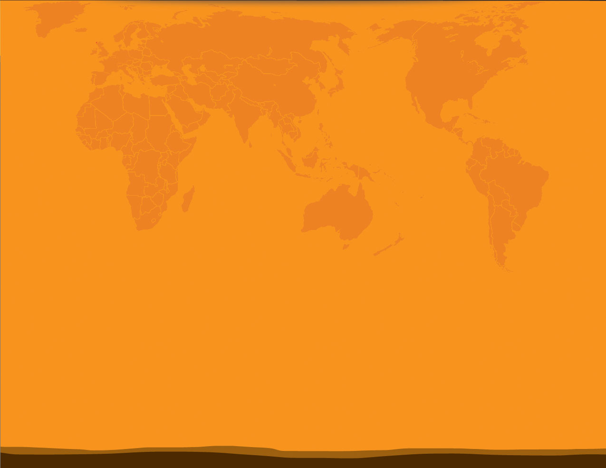
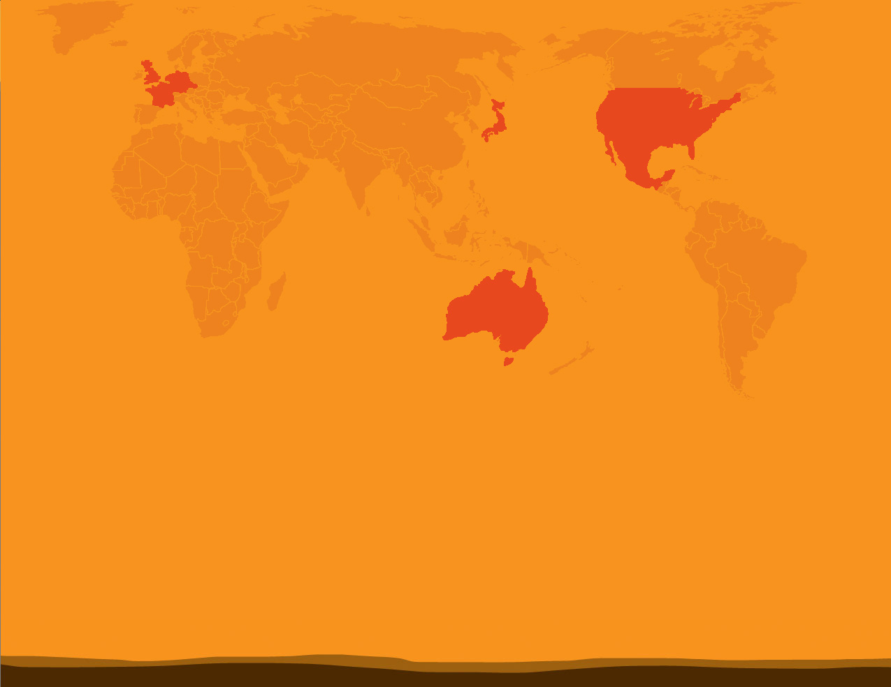
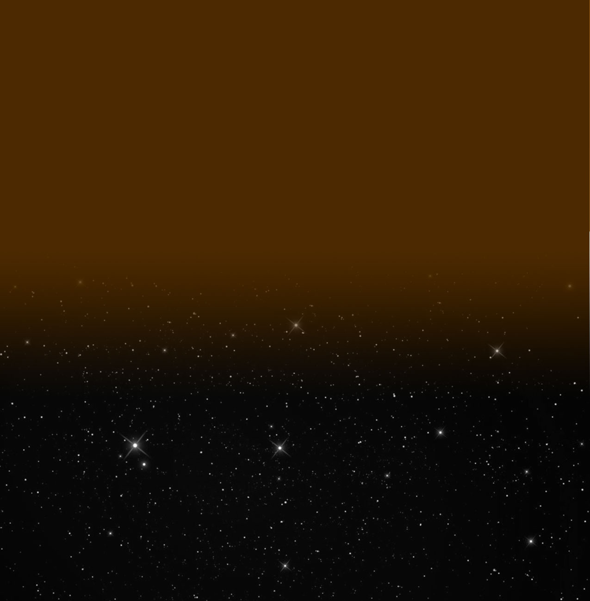
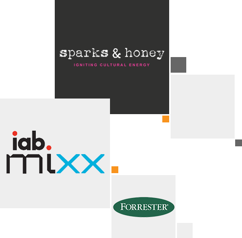

1965
Rapp & collins was formed in 1965 in New York
as the direct-marketing unit of force, Cone & Belding with Stanley Rapp as president
and Thomas Collins as exec VP-creative director
1969
Rapp & Collins splits from FCB to become an independent shop.
1971
Rapp & Collins merges with Stone & Adler.
1977
Rapp & Collins acquired by Doyle Dane Bernbach, while Stone & Adler remains independent.


1983
Rapp & Collins makes its first move into Europe when DDB acquires London-based McCorkell, Sidaway & Wright and creates MSW Rapp & Collins.
1986
Omnicom merges Rapp & Collins with another of its shops, Dallas-based Direct Response Group, to create the $100 million Rapp Collins USA within Omnicom's Diversified Agency Services (DAS) group
1988
After 23 years with the agency he founded, Stanley Rapp resigns.
1989
Rapp Collins USA merges with Marcoa DR Group.

1992-93
Rapp Collins becomes the first direct-marketing agency of record for Pizza Hut and Pepsi-Cola Co., respectively.
1993
Company renamed to Rapp Collins Worldwide.
1994
Rapp Collins Worldwide acquires London-based direct-marketing firm WWAV creating the largest U.K. direct-marketing agency. That same year, Rapp Collins Worldwide acquires teleservices company Optima Direct, Washington, and direct-response TV specialist Shain Colavito Pensabene Direct, New York.
1995
Rapp Collins Worldwide is the No. 1 direct-marketing agency in the world, with growth outside the U.S. surpassing its domestic level.
1996
Rapp Collins Worldwide acquires Communicaide Integrated Marketing Services in Mississauga, Canada, merging it with Hughes Rapp Collins to create Rapp Collins Communicaide.
2000
Rapp Collins Worldwide lands one of the largest DM accounts in the world at the time: SBC Communications.
2002
After winning the DIRECTV CRM business, Rapp Collins Worldwide expands its U.S. presence and opens a full-service office in Los Angeles. Toyota would become the second anchor account a few years later.
2004
Rapp Collins Worldwide named #1 Direct Marketing Agency by Advertising Age.
2005
Rapp Collins Worldwide launches first-ever pharma Facebook page for Merck’s Gardasil.
2008
DAS acquires The Kern Organization, an independent brand that operates under RAPP.
In the same year, Rapp Collins Worldwide rebranded as RAPP.
2009
RAPP named #3 Digital Agency by Ad Age and global CRM and digital agency of record for Hewlett-Packard.
2009
RAPP listed as the only direct-marketing agency on Advertising Age’s prestigious annual “Agency A-List” for its performance across three key criteria – creativity, effectiveness and business growth.
2011
Rapp opens San Fransico office
2012
February: RAPP hosts first RAPPATHON in conjunction with New York's Social Media Week.
March: RAPP subsidiary Sparks & Honey launches – a next-generation agency in NYC that ignites cultural energy to amplify brands in real-time.
June: RAPP wins first-ever Mixx Gold in the Pharma category for its breakthrough work on Viagra.
July: RAPP cited as a “Business Transformer” by Forrester.
2013
March: RAPP hosts TechZulu Trend Lounge at SXSW Interactive Conference and unveils new platform, poptag.
2015
January: Rapp celebrates its 50th Annversary
